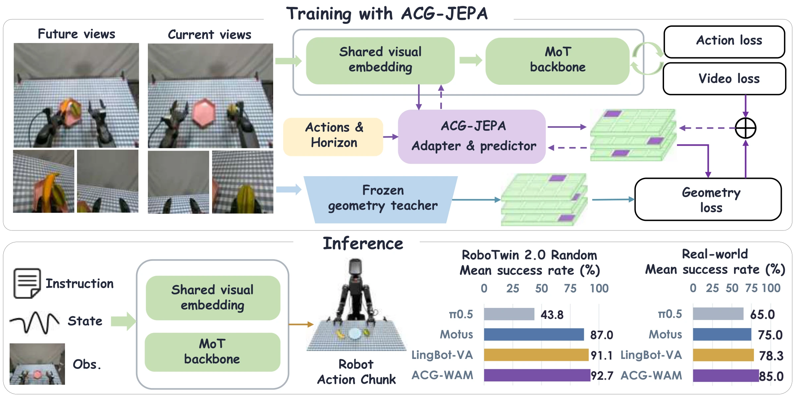
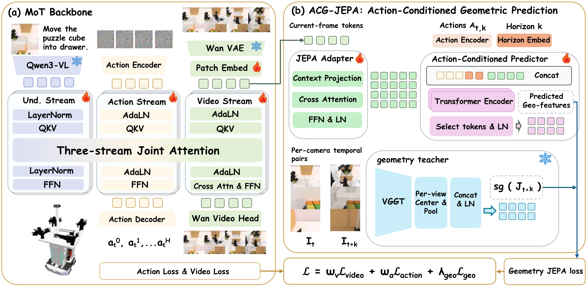
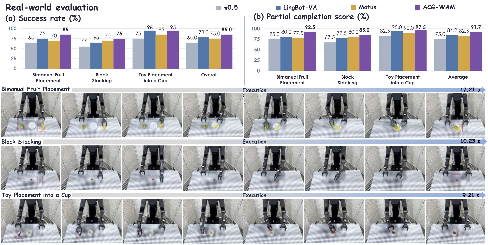

Actions connect observations
The predictor receives current visual features, the demonstrated action interval, and a temporal horizon. Multiple horizons capture short interactions and longer transitions.
Learning the geometric consequences of actions.
Geometry guides training; the policy acts on its own.
RoboTwin 2.0 · mean success
RoboTwin 2.0 · randomized
Real robot · mean success
Real-robot success over Motus
Action-conditioned geometric supervision, applied before temporal mixing. No auxiliary geometry modules at inference.
World-action models jointly predict video and robot actions, but their standard objectives provide no explicit target for the geometric consequences of an action sequence. ACG-WAM introduces ACG-JEPA: predict future geometric features from the current observation, the intervening actions, and a prediction horizon.

The predictor receives current visual features, the demonstrated action interval, and a temporal horizon. Multiple horizons capture short interactions and longer transitions.
A frozen VGGT teacher jointly encodes current and future images within each camera. The future slot supplies targets from the head and wrist views.
Supervision reaches the shared visual embedding before temporal mixing. The teacher and auxiliary predictor are removed for inference.

50 RoboTwin 2.0 tasks and three physical manipulation tasks. All results below are reported in the manuscript.
| Method | Clean | Randomized | Mean |
|---|---|---|---|
| GO-1 | 37.80 | 36.24 | 37.02 |
| π₀.₅ | 42.98 | 43.84 | 43.41 |
| X-VLA | 72.80 | 72.84 | 72.82 |
| Motus | 88.66 | 87.02 | 87.84 |
| LingBot-VA | 91.99 | 91.11 | 91.55 |
| MECo-WAM | 93.26 | 91.98 | 92.62 |
| WAM4D | 93.82 | 89.86 | 91.84 |
| ACG-WAM | 93.46 | 92.68 | 93.07 |
Macro averages across 50 tasks. ACG-WAM uses 100 evaluation episodes per task per setting. Best column values are bold.
| Method | Success | PCS |
|---|---|---|
| π₀.₅ | 65.00 | 75.00 |
| LingBot-VA | 78.33 | 84.17 |
| Motus | 75.00 | 82.50 |
| ACG-WAM | 85.00 | 91.67 |
Real robot: 20 evaluation trials per task, 60 per policy. PCS is the normalized partial completion score; averages weight the three tasks equally. See the paper for baseline sources and the full protocol.
TRON2 with WUJI hands. Ten successful demonstrations across three tasks, shown at original speed. Select a sample to explore each execution.
Coordinated grasping and placement of two fruits.
85% SR · 92.5% PCS
Place and release the upper block into a stable stack.
75% SR · 85.0% PCS
Grasp a toy and place it inside a confined receptacle.
95% SR · 97.5% PCS
These are selected successful demonstrations. The success rates above come from the complete evaluation protocol, including unsuccessful trials. Videos are muted; use the player controls to play or enter fullscreen.

Explore 24 recorded rollouts: two episodes per task in clean scenes and randomized scenes.
Clean success rate: 70%
Clean success rate: 100%
Clean success rate: 98%
Clean success rate: 94%
Clean success rate: 92%
Clean success rate: 98%
Task success rates are manuscript statistics over 100 episodes per setting, not estimates from the two displayed recordings. Simulation videos retain the source resolution (320 × 240), frame rate (10 fps), and timing.
Current manuscript citation. Publication details will be updated when available.
@unpublished{liu2026acgwam,
title = {ACG-WAM: World-Action Modeling via
Action-Conditioned Geometric Latent Prediction},
author = {Liu, Jiangtao and Xiang, Zishang and He, Yage and
Cui, Lingguo and Zhang, Baihai and Chai, Runqi and Chai, Senchun},
year = {2026},
note = {Manuscript},
url = {https://RoboOpus.github.io/ACG-WAM/}
}